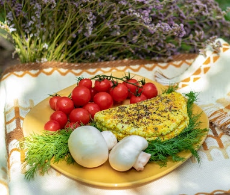

Удивительные растения нашего пастбища...
Астрагал- лекарственное растение,разновидностей которого насчитывают более двух тысяч сортов. Растет астрагал преимущественно в степях ,на хорошо освещённой територии.Особенно предпочитает местность обогащеную золотом ,которое он впитывает в себя и накапливает. Помимо золота растение состоит почти из всех металлов таблицы, так же кремния и фосфора. Из органических в- в содержит вы витамины А,С,и Е,алкалоиды,полисахариды,дубильные вещества и многое другое.Но главной особенностью астрагала является то,что он способен накапливать в себе селен.Селен это очень важный элемент для коз.Достаточное его количество в организме нормализует окислительные процессы, повышает иммунобиологическую реактивность организма, рост, привесы, шерстную, молочную продуктивность. Все содержащиеся в астрагале вещества так идеально подобраны ,что делают лечебные свойства это растения уникальными.Недаром это растение стало применятся в медицине более 1000 лет назад ещё скифами.Они называли астрагал "Царской травой".Для лечения его могли использовать только мужчины и только из высших слоев.Скифы готовили из астрагала элексиры молодости и долголетия. Астрагал до сих пор широко используется в фитотерапии. Астрагал-Царская трава, сохранившаяся до наши дней.Живая закваска в живом сыре
Кефирный Тибетский молочный гриб – группа бактерий и микроорганизмов используемая для получения молочного продукта такого как –кефир. Благотворно влияет на здоровье человека, используется в кулинарии ,а в нашем случае в качестве закваски для изготовления сыров. В состав гриба входят лактобактерии, уксуснокислые бактерии ,молочные дрожжи. Лактобацилы – одни из наиболее важных в группе молочных бактерий , т.к. превращают лактозу и другие углеводы в молочную кислоту. Кислая среда – препятствует росту многих патогенных бактерий и грибов. Это одна из основных причин использования молочного гриба в качестве закваски. Лактобактерии имеют –антагонистическое действие (эффект комбинированного действия ,т.е. полное уничтожение одного вещества другим)по отношению к патогенным микроорганизмам, таким как стафилококки , кишечные палочки, и т.п. Поэтому лактобактерии составляют основную часть микрофлоры кишечника. Они повышают сопротивляемость организма к различным заболеваниям . Лактобактерии широко используют для изготовления йогуртов, сыров, они участвуют в засолке овощей и приготовлении маринадов , в брожении силоса ,так как бактерии приводят к торможению процесс развития плесени , что обеспечивает длительное и качественное хранение продуктов. В производстве нашего сыра мы используем молокосвертывающий фермент животного происхождения , а в качестве закваски – кефир молочного гриба, кислая среда которого защищает наш сыр от роста патогенных микроорганизмов. Сыр – это не заменимый продукт по содержанию витаминов ,белков ,жиров и углеводов. Белки сыра – намного легче усваиваются ,чем белки молока. Сыр по сути – это концентрат молока, питательные вещества которого , быстро и легко усваиваются организмом . Мы хотим ,чтобы наш сыр , зарожденный среди кустов маслины и степных трав ,был таким же живым и натуральным, как сама природа!Специи
С давних времён люди использую в пищу всевозможные травы и специи. Специи предают блюду совершенно иной вкус ,запах, а иногда даже и цвет.Многие виды трав - отличные консерванты, недаром Скифские народы прикрывали сосуд с молоком пучком степных трав,оборачивали травами сыр,продлевая таким образом его срок хранения. Например, мята, содержащая в себе эфирное масло ментол, - отличный консервант,продлевает хранение сыров и предает невераятный аромат и вкус.Без мяты нельзя представить себе такой известный сыр как - халлуми.
Смеси черного,розового и душистого перцев, в жгучем веществе которых содержатся алкалоиды, - препятствуют росту патогенной микрофлоры.Сырные шарики Белпер Кнолле имеют свой неповторимый вкус ,вид, аромат, а,главное, длительный срок хранения благодаря смеси этих удивительных специй. Королевой среди консервантов можно смело назвать куркуму.Куркума - природный антибиотик.Она обладает противоокислительным и фингицидным свойствами.Помимо этого в ней содержится природный краситель куркумин,который даёт возможность использовать куркуму в качестве натурального красителя. Тмин,кумин,кориандр,пажитник- все эти и другие специи играют не последнюю роль в формировании сырной головки.Они придают сыру неповторимый вкус,цвет и аромат,подчёркивая тем самым его индивидуальность.
Англо-нубийская порода коз.
Удивительная порода, предки которой пришли из стран Востока и Африки . Нубия - большая территория в Северной Африке.Название происходит от древнеегипетского слова "nub" - золото. Эту, действительно, золотую породу выводили в течении многих лет в Англии, а затем и в других странах Европы,усовершенствуя ее как внешний вид так и репродуктивные возможности этой породы. Помимо экзотической внешности: длинных свисающих ушей и римского профиля, мощного корпуса и разнообразных окрасов, эти животные впечатляют качеством производимого ими молока. От сливочно - пломбирного ,до мендально- ореховых оттенков,с высоким процентом белка и жира. Нубийские козы-животные с удивительным интеллектом. Любознательные и эмоциональные.Преданно любящие всех членов своей нубийской семьи ,очень нуждаются в близком контакте с человеком. Нубийцы отлично оклиматизировалась в нашей стране, во многих городах и селах можна наблюдать этих удивительных созданий ,чистопородных ористократов и % метисов ,скрещенных с другими породами. Возможно, уже очень скоро многих перестанет восхищать их внешний вид ,но вкус молока нубийской козы не перестанет удивлять никогда.